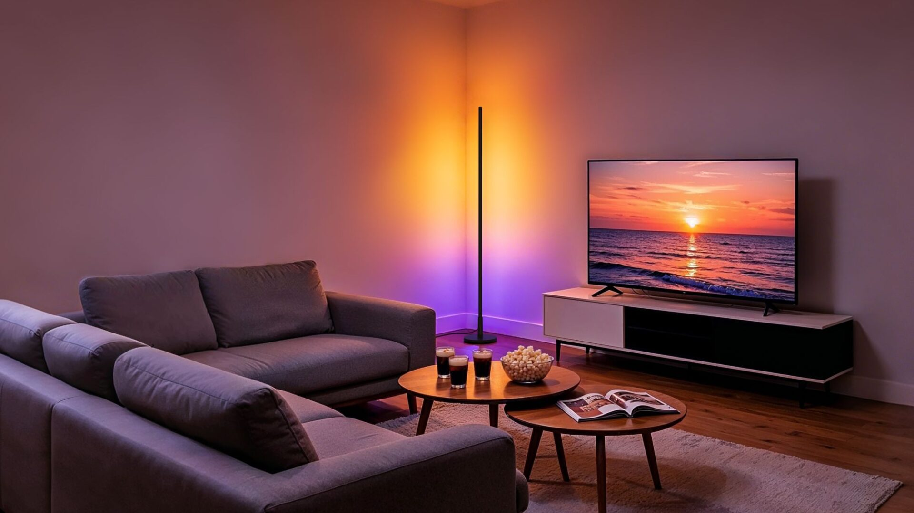
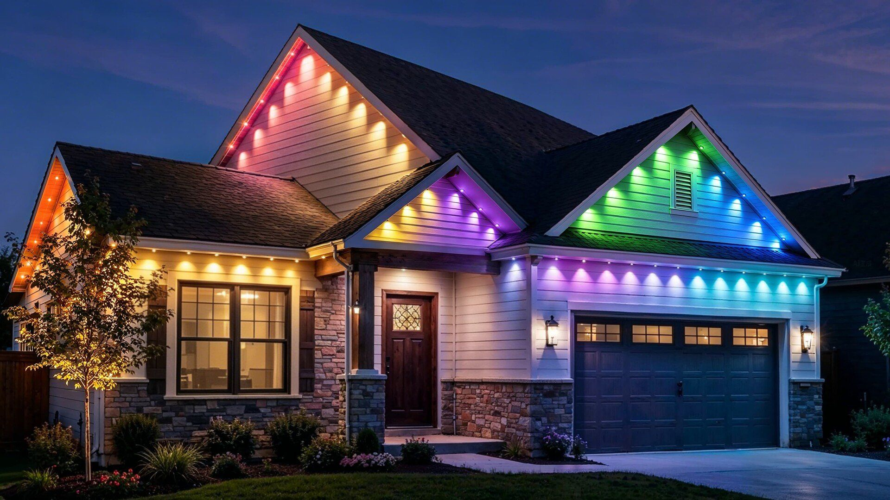

Aqara lighting: Thread + Zigbee, Matter-ready, October

Aqara’s IFA lighting push is now the clearest post-show ship story: five SKUs — Floor Lamp T1, LED Downlight T2, LED Strip T2, Outdoor String Lights H1, and Permanent Outdoor Lights H1 — all dual-radio Thread and Zigbee, Matter-enabled, with Home Assistant listed among the Matter ecosystems. Official press dropped Sep 4; Maison et Domotique’s Sep 10 floor report adds the calendar line local stacks actually need: October 2026, prices still TBA.

Thread mode is the Matter-over-Thread on-ramp (Apple Home, Google Home, Alexa, SmartThings, Homey, Home Assistant). Zigbee mode keeps deeper Aqara Home automations via an Aqara hub. Floor Lamp T1 is a 1.42 m side-emitting wall-wash with 18 zones and 2000–9000 K white; Strip T2 claims 108 LEDs/m and 18 zones per 3 m section; Downlight T2 is a 20 mm-deep recessed CCT or RGB-CCT can; outdoor H1 string and permanent eave lights are IP65 on the fixtures.
Practical takeaway: Hue still owns the “every new light is Matter over Thread” headline from yesterday; Aqara is the dual-mesh lighting competitor with a named month.
- Primary source
- Aqara IFA 2026 press; Maison et Domotique, 10 Sep 2026; Matter Alpha